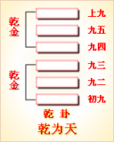

<!DOCTYPE html PUBLIC "-//W3C//DTD XHTML 1.0 Transitional//EN" "http://www.w3.org/TR/xhtml1/DTD/xhtml1-transitional.dtd">

<html xmlns="http://www.w3.org/1999/xhtml">
<head>
<meta content="text/html; charset=utf-8" http-equiv="Content-Type"/>
<title>周易第一卦：乾卦 乾为�?乾上乾下原文解释翻译-周易-国学�?/title>
<meta content="周易,乾卦,乾为�?乾上乾下" name="keywords"/>
<meta content="周易,乾卦,乾为�?乾上乾下，周易第一卦：乾卦 乾为�?乾上乾下解释翻译�?（乾为天）乾上乾�?《乾》：元亨利贞�?初九：潜龙，勿用�?九二：见龙在田，利见大人�?九三：君子终日乾乾，夕惕若厉,无咎�?九四：或跃在渊，无咎�?九五：飞龙在天，利见�? name="description"/>
<link href="css.css" media="screen" rel="stylesheet" type="text/css"/>
</head>
<body>
<div class="gxlayout">
</div>
<div class="gxlayout">
<div class="ihead">
<div class="title"><a>周易</a></div>
<ul class="more fl">
<li>当前位置:<a>国学梦首�?/a> &gt; <a>国学经典</a> &gt; <a>经部</a> &gt; <a>四书五经</a> &gt; <a>周易</a> &gt;  周易第一卦：乾卦 乾为�?乾上乾下原文解释翻译</li>
</ul>
</div>
<div class="gxbl fl">
<div class="latitle">

<h1>周易第一卦：乾卦 乾为�?乾上乾下</h1>
<div class="lainfo"><span>作者：佚名</span> <span>全集�?a>周易</a></span> <span>来源：网�?/span> <span>[<a rel="nofollow" target="_blank">挑错/完善</a>]</span></div>
</div>
<div class="lacontent">
<div class="clearfix"></div>
<p style="text-align:center"></p>
<p style="text-align:center"><a>周易第一卦详�?/a></p>
<p style="text-align:center"><a>第一卦初九爻详解</a>　<a>第一卦九二爻详解</a>　<a>第一卦九三爻详解</a></p>
<p style="text-align:center"><a>第一卦九四爻详解</a>　<a>第一卦九五爻详解</a>　<a>第一卦上九爻详解</a></p>
<p><strong><a target="_blank">周易</a>第一�?�?乾为�?乾上乾下</strong></p>
<p>乾：元，亨，利，贞�?/p>
<p>初九：潜龙，勿用。九二：见龙再田，利见大人。九三：君子终日乾乾，夕惕若厉，无咎。九四：或跃在渊，无咎。九五：飞龙在天，利见大人。上九：亢龙有悔。用九：见群�?无首，吉�?/p>
<p>彖曰：大哉乾元，万物资始，乃统天。云行雨施，品物流形。大明终始，六位时成，时 乘六龙以御天。乾道变化，各正性命，保合大和，乃利贞。首出庶物，万国咸宁�?/p>
<p>象曰：天行健，君子以自强不息。潜龙勿用，阳在下也。见龙再田，德施普也。终日乾 乾，反复道也。或跃在渊，进无咎也。飞龙在天，大人造也。亢龙有悔，盈不可久也。用 九，天德不可为首也�?/p>
<p>文言曰：「元者，善之长也，亨者，嘉之会也，利者，义之和也，贞者，事之干也。君 子体仁，足以长人;嘉会，足以合�?利物，足以和�?贞固，足以干事。君子行此四德者， 故曰：乾：元亨利贞。�?/p>
<p>初九曰：「潜龙勿用。」何谓也?子曰：「龙德而隐者也。不易乎世，不成乎名;�?世而无闷，不见是而无�?乐则行之，忧则违�?确乎其不可拔，乾龙也。�?/p>
<p>九二曰：「见龙在田，利见大人。」何谓也?子曰：「龙德而正中者也。庸言之信，庸 行之谨，闲邪存其诚，善世而不伐，德博而化。易曰：「见龙在田，利见大人。」君�?也。�?/p>
<p>九三曰：「君子终日乾乾，夕惕若厉，无咎。」何谓也?子曰：「君子进德修业，�?信，所以进德也。修辞立其诚，所以居业也。知至至之，可与几也。知终终之，可与存义 也。是故，居上位而不骄，在下位而不忧。故乾乾，因其时而惕，虽危而无咎矣。�?/p>
<p>九四：「或跃在渊，无咎。」何谓也?子曰：「上下无常，非为邪也。进退无恒，非�?群也。君子进德修业，欲及时也，故无咎。�?/p>
<p>九五曰：「飞龙在天，利见大人。」何谓也?子曰：「同声相应，同气相求;水流湿， 火就�?云从龙，风从虎。圣人作，而万物覩，本乎天者亲上，本乎地者亲下，则各从其 类也�?/p>
<p>上九曰：「亢龙有悔。」何谓也?子曰：「贵而无位，高而无民，贤人在下而无辅，�?以动而有悔也。�?/p>
<p>乾龙勿用，下也。见龙在田，时舍也。终日乾乾，行事也。或跃在渊，自试也。飞龙在 天，上治也。亢龙有悔，穷之灾也。乾元用九，天下治也�?/p>
<p>乾龙勿用，阳气潜藏。见龙在田，天下文明。终日乾乾，与时偕行。或跃在渊，乾道�?革。飞龙在天，乃位乎天德。亢龙有悔，与时偕极。乾元用九，乃见天则�?/p>
<p>乾元者，始而亨者也。利贞者，性情也。乾始能以美利利天下，不言所利。大矣哉!�?哉乾�?刚健中正，纯粹精也。六爻发挥，旁通情也。时乘六龙，以御天也。云行雨施，�?下平也�?/p>
<p>君子以成德为行，日可见之行也。潜之为言也，隐而未见，行而未成，是以君子弗用 也�?/p>
<p>君子学以聚之，问以辩之，宽以居之，仁以行之。易曰：「见龙在田，利见大人。」君 德也�?/p>
<p>九三，重刚而不中，上不在天，下不在田。故乾乾，因其时而惕，虽危无咎矣�?/p>
<p>九四，重刚而不中，上不在天，下不在田，中不在人，故或之。或之者，疑之也，故无 咎�?/p>
<p>夫大人者，与天地合其德，与日月合其明，与四时合其序，与鬼神合其吉凶。先天下�?天弗违，后天而奉天时。天且弗违，而况於人�?况於鬼神�?</p>
<p>亢之为言也，知进而不知退，知存而不知亡，知得而不知丧。其唯圣人乎?知进退�?亡，而不失其正者，其为圣人�?</p>
<p> </p>
<p><strong><a href="01_乾卦.html" target="_blank">乾卦</a>卦象，乾为天卦的象征意义</strong></p>
<p><strong>乾卦所包含的范围是�?/strong> 凡是积极向上的、刚健有力的、权威的、圆形的、男性长辈、珍贵的、富有的、寒冷的、坚硬易碎的、在上的等事物，都归于乾卦。六十四卦中乾用来象征天、阳、日、君、父、夫、圆、玉、金、冰、寒、马、赤色、快速、快车、不知疲倦等�?/p>
<p><strong>“乾卦”的具体象征意义如下�?/strong></p>
<p>乾为天，在古人看来，天上的日月星辰有周期性、规律性、轨迹性，所以天代表着“圆”的意思，是环绕一周之意�?/p>
<p>乾卦所代表的方位为西北寒度，所以喻有寒、冰之意�?/p>
<p>乾所代的天气为晴天，或是干旱之状�?/p>
<p>乾所代表的时间为秋季，农历九、十月，�?a target="_blank">冬至</a><a target="_blank">大雪</a>45天�?/p>
<p>乾卦所代表的颜色是红色，也是代表着旺盛的生命力、感情热烈的一种色彩�?/p>
<p>乾所代表的动物为良马、老马、驳马等，也指象、天鹅、狮子�?/p>
<p>乾代表的收获景色就是木果结于树梢，圆而在上，乾圆之象�?/p>
<p>乾所对应�?a target="_blank">五行</a>为金�?/p>
<p>乾所代表的场所为首都、大郡、大广场等�?/p>
<p>乾卦所代表的味道为辛、辣�?/p>
<p>天至高、至大、至尊，天生万物，如果引申到人类社会之中，天就像一个国家的国君，一个家庭之中的父亲一样。在一个社会之中，乾具体比拟的人主要是指上层人物、有领导地位的人、起决定作用的人、有权的人、富有者、当官的人、神、君王、圣人、君子、祖父、父亲、家长、军警、执法者、经济工作者等�?/p>
<p>乾所代表的性格主要的特征就是果决，当然，还包括刚健武勇、重义气、动而少静、威严、昭明豁达、自尊、正直、勤勉、骄傲、霸道等�?/p>
<p><strong>乾与人体对应的部位是�?/strong> 头、首、胸部、大肠、肺、右足、右下腹、精液、男性生殖器等�?/p>
<p>六十四卦之中的乾，是两个乾卦同卦相叠而成，象征天，用龙来喻指有德才的君子，又象征纯粹的阳和健，表明兴盛强健。乾卦是根据万物变通的道理，喻示吉祥如意，教导人们�?a target="_blank">天道</a>而行�?/p>
<p>乾卦是六十四卦中的第一卦，《序卦》讲述了六十四卦的排列次序，其指出：“有天地，然后万物生焉。”意思是以乾卦为天，�?a href="02_坤卦.html" target="_blank">坤卦</a>为地。有天地才能化生万物。乾代表阳刚劲健的主动力，坤则是承受力，两者相摩相荡而变化生出万物�?/p>
<p>《象》中这样解释乾卦：天行健，君子以自强不息。这里指出：天道运行周而复始，永无止息，谁也不能阻挡，君子应效法天道，自立自强，不停地奋斗下去�?/p>
<p>乾卦属于上上卦。《象》中这样来断此卦：困龙得水好运交，不由喜气上眉梢，一切谋望皆如意，向后时运渐渐高�?/p>
<p>关键词：周易,乾卦,乾为�?乾上乾下</p>
<div class="clearfix"></div>
<div class="title"><div class="thot">解释翻译</div><span>[挑错/完善]</span></div><p><a href="01_乾卦.html" target="_blank">乾卦</a>：大吉大利，吉祥的占卜�?/p>
<p>初九:龙星<a target="_blank">秋分</a>时潜隐不见，不吉利�?/p>
<p>九二:龙星出现在天田星旁，对王公贵族有利�?/p>
<p>九三：有才德的君子整天勤勉努力，夜里也要提防危险，但最终不会有灾难�?/p>
<p>九四：有些大人君子跳进深潭自杀，并不是他们本身的过失�?/p>
<p>九五：龙�?a target="_blank">春分</a>时出现在天上，对王公贵族有利�?/p>
<p>上九：龙星上升到极高的地方，是不吉利的征兆�?/p>
<p>用九：卷曲的龙见不到头，是吉利的兆头�?/p>
<div class="title"><div class="thot">注释出处</div><span>[请记住我�?国学�?www.guoxuemeng.com]</span></div><p>(1)乾是本卦标题。乾指北斗星，用来代表天。本卦的内容主要与天有关</p>
<p>(2)元亨、利贞是两个表示吉祥的贞兆辞，表明是两个吉占。元亨的意思约等于大吉。利贞的意思是吉利的贞卜�?/p>
<p>(3)初九是本卦第一爻名称，�?下“九二”、“九三”等也是。“九”代表阳性“——”，“六”代表阴�?“——”。一个卦画由六爻组成，从下向上排列，依次用初、二、三、四、五�?上表示，如“六三”、“上六”、“九二”、“上九”等。它们都是表示爻的阴阳性和排列顺序的名称�?/p>
<p>(4)潜龙指秋分时的龙星。性和排列顺序的名称。④潜龙指秋分时的龙星。勿用：不利�?/p>
<p>(5)�?(xian):出现。龙:龙星。田:天田.大人：指王公贵族�?/p>
<p>(6)君子:指有 才德的贵族。乾乾：勤勉努力�?/p>
<p>(7)�?夜晚。惕：敬惧。厉：危险。咎; 过失，灾难�?/p>
<p>(8)�?有人，指贵族。跃在渊:跳进深潭�?/p>
<p>(9)飞龙;�?星�?/p>
<p>(10)亢：龙升腾到极高处的龙星.有梅：不吉利的占筮�?/p>
<p>(11)用九: 乾卦特有的爻名。《易经》的乾卦和坤卦都多一�?坤卦为‘用�?，专门表 示这两卦是全阳、全阴。“用九”表示乾卦的全阳爻将尽变为全阴爻�?/p>
<p>(12) 群龙:等于说卷龙。龙卷曲起来就见不到头�?/p>
<div class="clearfix"></div>
<div class="contextdhall clearfix">
<ul>
<li>上一篇：没有�?</li>
<li>下一篇：<a href="02_坤卦.html">周易第二卦：坤卦 坤为�?坤上坤下</a> </li>
<li>全   文�?a>周易</a></li>
</ul>
</div>
</div>
<div class="clearfix mt20"></div>
</div>
</div>
<div class="clearfix mt20"></div>
<div class="gxlayout">
</div>
<script>
var _hmt = _hmt || [];
(function() {
  var hm = document.createElement("script");
  hm.src = "https://hm.baidu.com/hm.js?872034ded637616c5cf8e173a446bb0e";
  var s = document.getElementsByTagName("script")[0];
  s.parentNode.insertBefore(hm, s);
})();
</script>
</body>
</html>
